01
中小企業主
老闆的 AI 實戰工作坊
不是講概念的那種。鞋墊品牌、餐飲連鎖、電商、整脊工作室——每個老闆帶著自己的業務問題來，當天用 AI 做出第一個解法。
課綱內容即將公開
我在 HP、趨勢科技做了十三年企業 IT、雲端和大數據專案，之後在外商科技公司負責 AI 與健康應用。現在到大企業、新創和中小企業講 AI，分享的都是這些現場學到的事：工具怎麼選、流程怎麼改、風險怎麼控。
你問，它答，你自己執行——這是大部分 AI 工具的樣子。Manus 不一樣：交辦一個任務，它自己開瀏覽器、找資料、整理成一份成果，你回來拿東西就好。這是我在工作坊裡實際示範、也自己每天在用的 Agent 工具。
每個產業的卡點都不一樣，所以每次都要重新想過。這是我喜歡這份工作的原因。
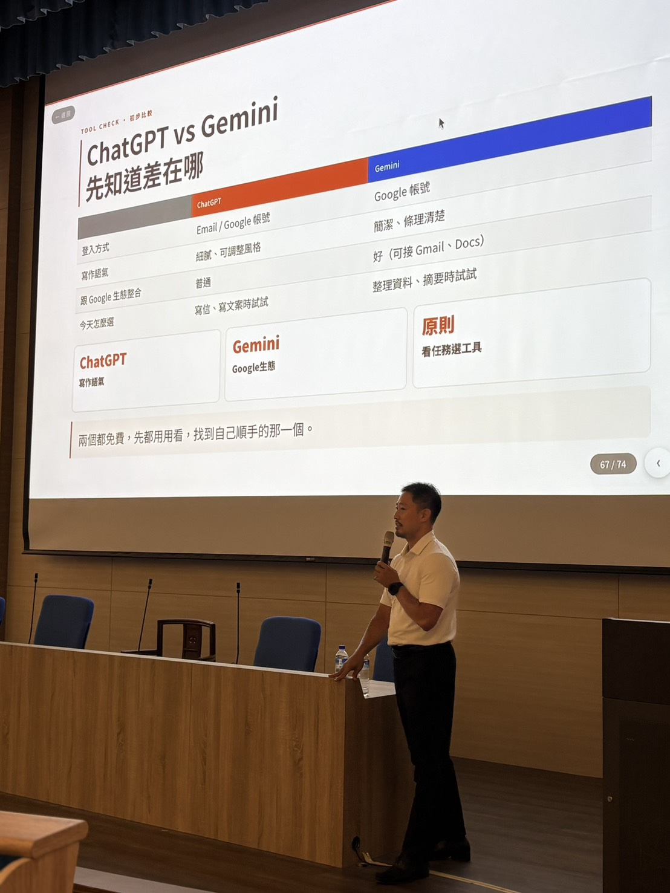
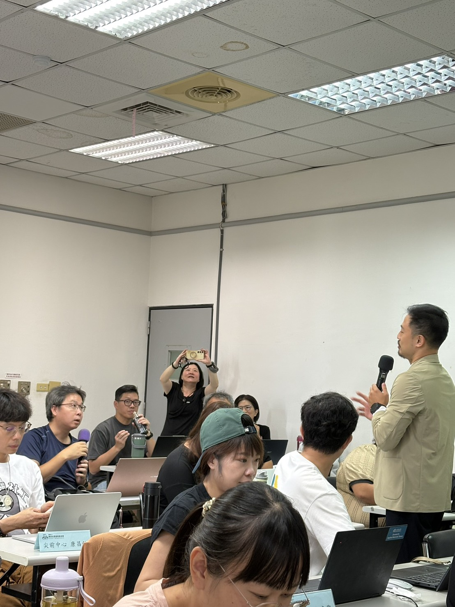


這些是產業真實的應用需求。
六小時 Google AI 工具實戰——讓不同產業的老闆當天就能用 AI 解決自己的真實業務問題。
業務員如何在拜訪前用 AI 做客戶研究，縮短暖場時間。
病患帶著 AI 給的答案進診間——醫護如何回應、如何建立信任。
用 NotebookLM 把出版社 PDF 變成備課助手，直接出題、做差異化教材。
教學生怎麼用 AI 倡議——讓 AI 幫你思考，而不是替你思考。
小編建立品牌風格指引，讓每一篇貼文都像自己寫的，只是快十倍。
從 AI 基本素養到 ChatGPT / Gemini / Manus 工具選用，公部門同仁最在意的是資料安全與深偽（deepfake）風險，不是功能新不新。
主管與實習主管的時間管理課——25 個有研究根據的時間管理方法論，結合 AI 怎麼接手一半的工作。
沒有技術背景的志工如何用 AI 省掉日常重複工作的一半時間。
教練用 Claude 排訓練課表、寫行政計畫與成果紀錄——但選手的傷病、個資，紅線要先畫清楚再開始用。
我不只在台上講——每種合作形式的核心都是同一件事：讓你當天就有東西能用
我設計課程的標準只有一個：學員離開教室時，手上要有一個今天就能試的東西，而不是一疊漂亮的簡報。半天到兩天不等，視需求調整。
60–90 分鐘。我不做通用版簡報——每場演講前我會了解你的聽眾是誰、他們平常遇到什麼問題，然後把 AI 的話翻譯成他們聽得懂的語言。
不是來賣工具的。我會先看你現有的流程哪裡在浪費時間、哪裡有風險，再建議從哪裡開始，不建議一次全部換掉。
工具介紹課上完之後呢？這是我每次帶企業內訓與顧問案，實際走過的四個步驟——不是理論框架，是每次都真的照著走一遍的流程。
先不談工具。把模糊的「我想導入 AI」拆成一個具體、可執行的問題，找到真正值得解決的那一件事。
不是丟一句提示詞試試看，是把解法變成一套下次也能用、交接得出去的工作流程。
用 ChatGPT、Gemini、AI Agent 或 Vibe Coding，視情況選工具，當場做出一個能實際運作的版本，不是投影片。
從個人可用，走到部門可用——這一步最常卡關，也是下面這張卡片要處理的事。
現在 HR、財務、行銷都能自己用 AI 做出工具，但從「做得出來」到「企業正式使用」，中間還隔著資安、權限、備份這些問題。我在趨勢科技做過全球資訊中心的系統架構專案經理，這些年做企業內訓，會把這套判斷力轉譯成非技術人員也能懂的檢查方式，讓你知道什麼可以自己放手做，什麼階段該找 IT、資安團隊一起把關。
下面是跨產業實作累積下來的常見題目——你的場合通常會是其中兩三個的混搭。
不是講概念的那種。鞋墊品牌、餐飲連鎖、電商、整脊工作室——每個老闆帶著自己的業務問題來，當天用 AI 做出第一個解法。
課綱內容即將公開
行銷預算永遠不夠——但這不是輸給大品牌的理由。AI 讓你一個人做出以前要外包的事：定位、內容、受眾、文案。
課綱內容即將公開
拜訪客戶前準備了多少？AI 能在 10 分鐘內整理出對方公司的近況與痛點。成交率的差距，往往發生在見面之前。
課綱內容即將公開
現在的病患進診間前，很多人已經問過 ChatGPT。這不是威脅，是機會——懂得用 AI 輔助溝通的醫護人員，反而能建立更強的信任感。
課綱內容即將公開
把出版社 PDF 上傳進 NotebookLM，直接問它出題、做差異化補充、生成討論素材。它只根據你的教材回答，不會亂發揮。
課綱內容即將公開
不是叫學生不要用，而是教他們怎麼用得有水準。建立讓 AI 幫你思考、而不是替你思考的習慣。
課綱內容即將公開
針對沒有技術背景的勞工與志工設計。不談架構、不談參數，只談每天在做的事，哪些可以用 AI 省一半時間。
課綱內容即將公開
有走對的路，也有走了彎的——做完才會知道哪些建議真的能用，哪些只是漂亮話。
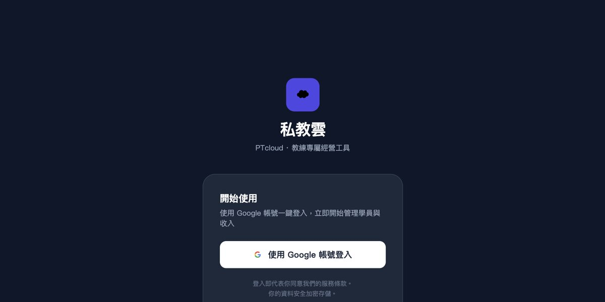
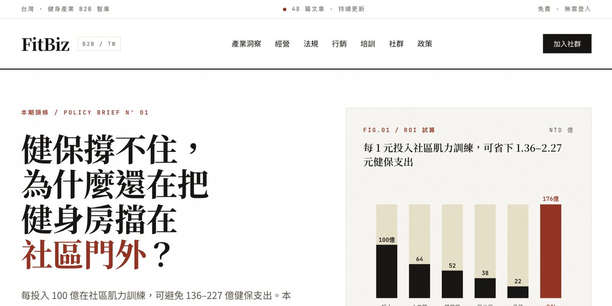
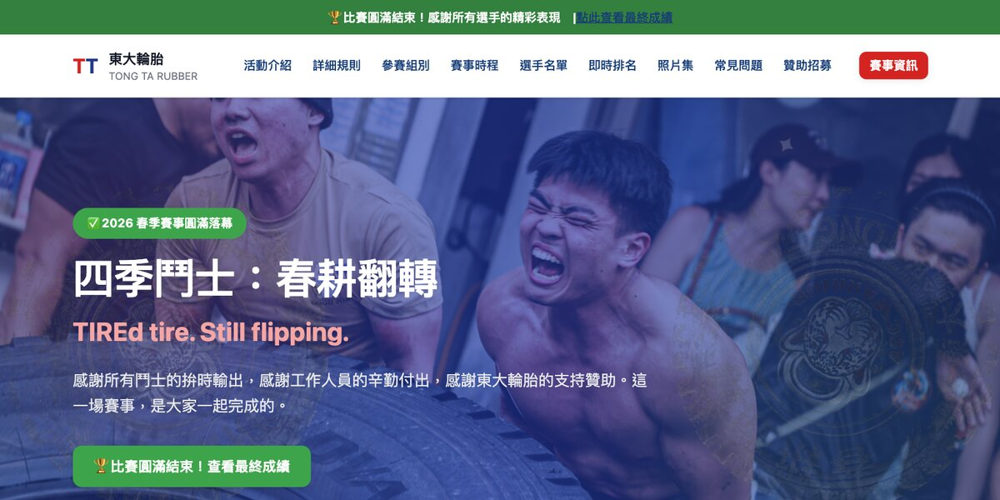
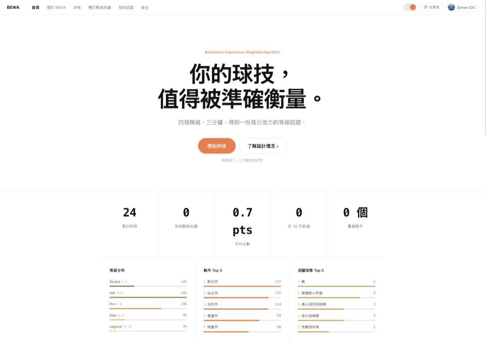
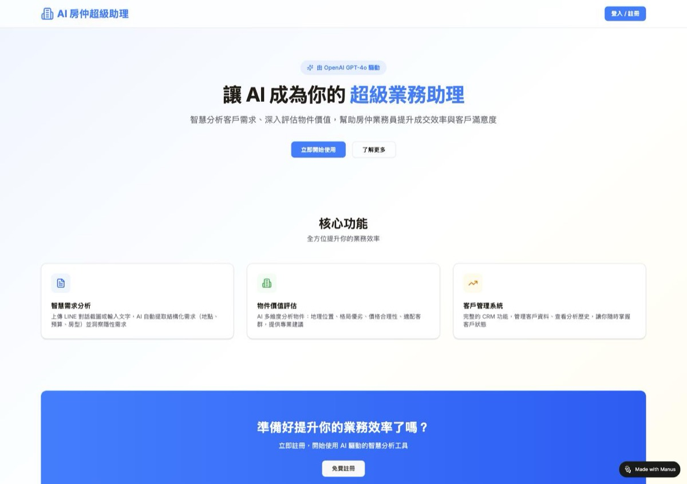
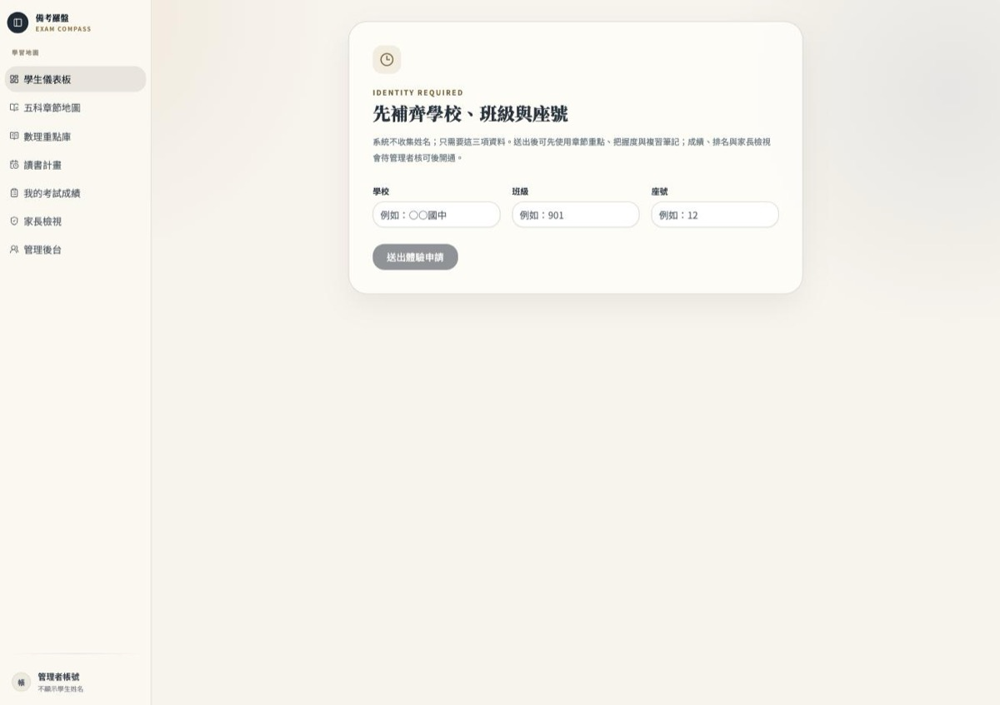
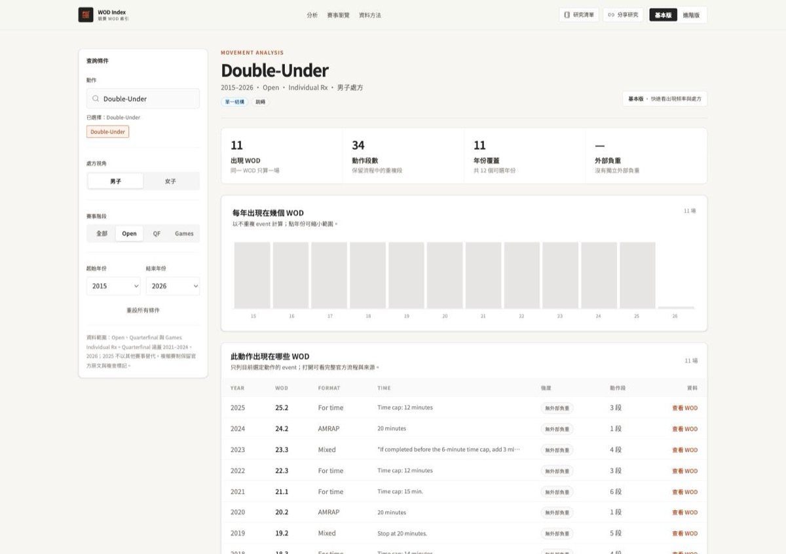
收錄 2015–2026 CrossFit Open、Games 與 Quarterfinal 官方賽事，依動作、年份、強度交叉查詢訓練趨勢。
查看細節 ›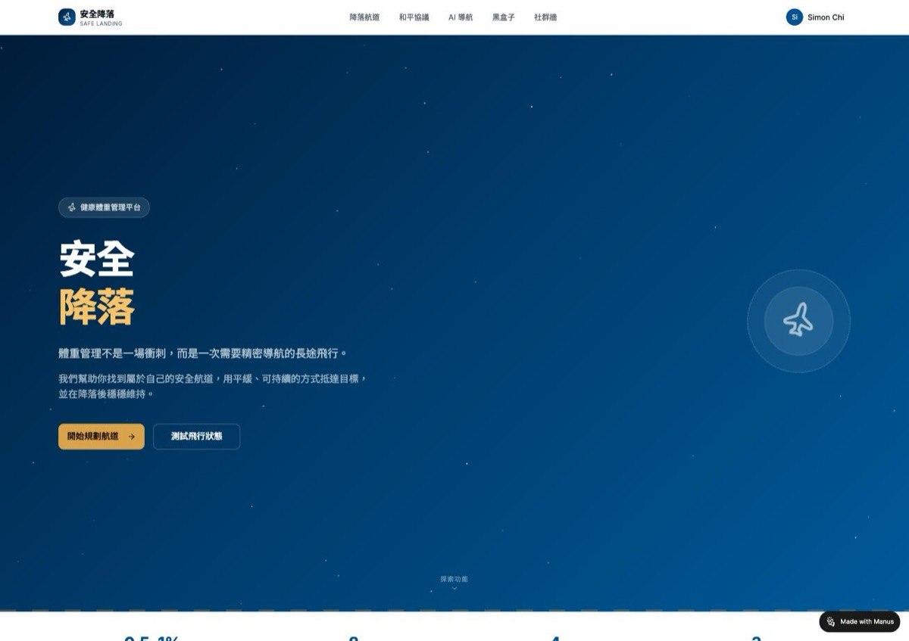
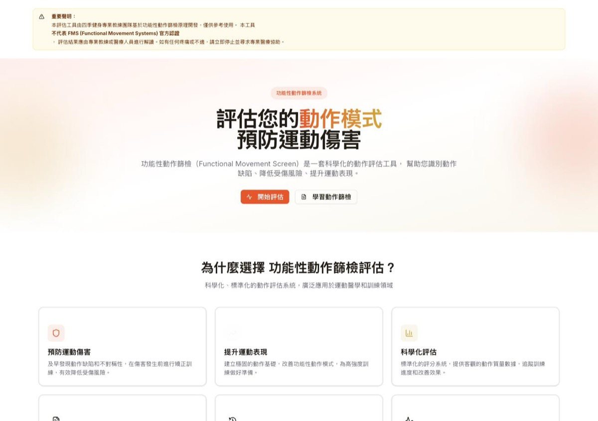
我不是從學術界轉過來的 AI 講師。我在 HP 和趨勢科技花了 13 年做系統和資安，然後在外商帶 AI 導入專案，後來自己創業。每一段經歷都讓我更清楚：企業在用 AI 時，真正的障礙不是技術，是不知道從哪裡開始、不知道該信任誰。
所以我在課前一定先了解聽眾。台南文化局的小編最怕「貼文寫出來都一個味」；民生醫院的護理師在意的是病患問了 AI 之後她要怎麼應對；磊山保經的業務員想知道見客戶前十分鐘能準備什麼。問題不一樣，課就不一樣。
「最常有人問我：你覺得 AI 會取代哪些工作？我的答案是：不會用 AI 的人，會被懂得用 AI 的人取代。這不是威脅，是機會——前提是你知道怎麼用。」
策略規劃、業務銷售、會議溝通、人資管理、行銷社群、財務法務……
複製貼上，今天就能用。不需要技術背景。
根據 Gartner、MITRE、MIT Sloan 等框架設計，20 題、6 大維度，即時得出您的 AI 發展等級與優先改善建議。
合作前大家最常問的幾件事。
10 到 100 人都可以，會依人數調整分組與實作方式。人數多時會拆成多個小組，確保每個人都有機會實際動手做，不是只坐著聽。
50 到 500 人皆可。每場演講前會先了解聽眾背景與常遇到的問題，內容不是通用版簡報，而是針對這場聽眾調整過的內容與案例。
企業內訓／工作坊是半天到兩天的實作課程，學員離開時要有一個當天就能用的東西；主題演講是 60–90 分鐘的分享，針對聽眾的產業與問題客製內容；AI 導入顧問則是月顧問制，先盤點流程找出真正的卡點，再持續陪跑導入計畫。
通常在 2 個工作天內回覆。建議來信附上活動日期與預計人數，方便快速評估並給出具體建議。
可以，提供繁體中文、簡體中文、English 三種語言的授課與顧問服務。
課前會先訪談了解團隊現有的 AI 使用程度，再調整案例難度。核心是讓學員用 AI 處理手上真實的工作任務，不是停在工具功能介紹，程度落差大的團隊也能一起參與。
如果內容會碰到系統串接、資料存取或工具權限設定，會建議 IT 或資訊窗口一起參與；如果只是先建立團隊對 AI 的共識與基本操作，不需要。詳見上方 Think Like IT。
多數團隊會先從一場內訓或演講建立共識，帶走第一批可用的工具與任務清單。如果需要更深入落地，可以接著談 AI 導入顧問 的月顧問制，從一次性工作坊延伸成持續陪跑的導入計畫。
說清楚你的情況就好，不用準備完整需求書——我們先聊聊再說。